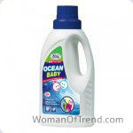
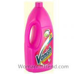
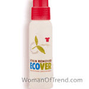
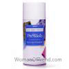
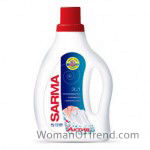
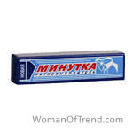
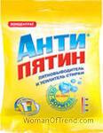
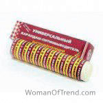
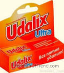

Multe gospodine se confruntă cu problema petelor pe haine, prosoape de bucătărie, pe lenjerie. Mai ales insultarea poate deveni dacă pata nu este îndepărtată de pe drum sau un lucru favorit. Dar nu disperați. Acum este oferită o cantitate imensă de substanțe de îndepărtare a petelor. Citiți, de asemenea, despre tipurile de pete și metodele de eliminare a petelor .
conținutul articolului:
- revizuire a celor mai bune de îndepărtare a petelor de haine. Recenzii gospodinele
- remediu pentru orice pete Frau Schmidt
- Vanish pentru îndepărtarea petelor pentru rufe colorate
- anti-pata Ecover
- Stain Amway Pre Wash
- Remediu a încercat Sarmaua activă
- pată Minute
- mijloace pentru îndepărtarea petelor – Antipyatin
- pata Edelstar
- pentru îndepărtarea petelor Udalix Ultra
revizuire a celor mai bune de îndepărtare a petelor de haine. Recenzii amante
Acest articol vă va ajuta să aflați care dintre substanțele de îndepărtare a petelor sunt cele mai bune și cele mai eficiente. Pentru claritate în paranteze, este scrisă o estimare medie a fondurilor de către colegii de muncă. Remediu pentru orice pete Frau Schmidt (5).
. Recenzii și prețuri.
 Producție – Austria . Îndepărtează petele de grăsime, sânge, vin, ulei, fructe . Potrivit pentru lenjeria colorată și albă . Conține sapun de biliard. Nu are efect nociv asupra pielii mâinilor.
Pret: 220р .
gospodine Recenzii folosi diluanti vopsea Frau Schmidt:
Angelica:
Café set de înghețată de ciocolată la fața locului și a revizuit o grămadă de bani să-l retragă, dar nimic nu-mi place descrierea și compoziția. Ca rezultat, am aflat despre acest produs de îndepărtare a petelor. El este lăudat ca un remediu delicat. Că nici măcar nu poți purta mănuși. L-am cumpărat și imediat “în luptă”. A pus-o pe pată și a lăsat-o să lucreze timp de 2 ore, apoi a aruncat-o în mașina de scris. Rezultatul a fost foarte multumit! Nu a mai rămas nimic din pete. Ca nici o urmă – instrumentul a lucrat foarte “ușor”. După asta, nu schimb acest instrument pentru nimic. Acesta și biți copii șosete băieți spălat excelent și cămăși de soțul ei. Deci, pot recomanda cu onestitate tuturor. Îndepărtați agentul de eliminare a pătării Vanish pentru lenjeria colorată (4,5). Recenzii și prețuri. Promises elimina cu ușurință diverse impurități într-un timp scurt, oferind rufelor o prospețime radiantă și curățenia. Pentru expunere, se recomandă aplicarea produsului direct pe pete.
Pret: 150 fre.gospodinele
Recenzii utilizând pete Remover Vanish:
Arina:
I la Dispari atitudinea generală a fost rău, deoarece unele dintre fondurile sub acest nume – este de bani pe scurgere. Dar Vanish “pentru lenjeria de culoare” plăcut surprins. Cu ajutorul lui, am eliminat punctul de ceai de la blugii mei preferați. Și este direct înainte ca ochii să devină mai blandi după ce a pus sau a făcut un agent. Și culoarea blugilor înșiși nu au suferit. Nu mai exista nici un spot deschis pe fundalul general. De-a lungul ultima jumătate de an am adăuga un mijloc pentru fiecare spălare, și pete puternice ungeți-le înainte de a pune în aparat. Rezultatul este delicios de fiecare dată. Deci sunt mulțumit de asta!
ecover anti-pata (4,7)
 Manufacturing – Belgia. Pentru lenjeria albă și colorată .. Compoziția componentelor vegetale și minerale și a produselor petroliere. COPES cu urme de iarbă, grăsime, murdărie, sânge, etc . Produsul se descompune fără reziduuri nocive și vapori, astfel încât să nu dăuneze naturii.
Preț: 230 p .gospodinelor Recenzii folosind Ecover Stain Remover:
Catherine:
prefera numai acest agent pentru îndepărtarea petelor din cauza faptului că aceasta nu conține această chimie teribilă, care poate fi dăunătoare, în special pentru copii. De asemenea, este convenabil de utilizat datorită periei, care asigură un mijloc rentabile de consum, și nu se poate freca cu o cârpă înmuiată pentru îndepărtarea petelor, și doar freca pata acestei perie.Am pus-o pe pete înainte de spălare câteva minute. Și nici o problemă cu petele.
Stain Amway Pre Wash (4,5)
 se descurcă cu pete de grăsime, ulei, plante medicinale et al. Este foarte ușor de utilizat. Nu este necesară expunerea pe termen lung. Țesutul este curățat imediat după pulverizarea sprayului.
Pret: 250 fre.gospodine Recenzii folosind pentru îndepărtarea petelor Amway Pre Wash:
Olesia:
despre acest instrument, i-am spus prietenului meu. Și sunt recunoscătoare pentru asta! Acest spray este perfect pentru combaterea petelor. Trebuie doar să aveți un pulverizator cu pulverizare înainte de spălare. Copii cu pete noroi, pete de ulei, pete de sudoare, gubnushki, etc Și destul de mult din acest balon de mult timp. Acum nu mai am nimic în casă cu o pată care să nu poată fi spălată. Și această fericire!
Remediu SARMA spoturi active (4,5)
 Îndepărtează petele de ulei și unsoare , precum și urme de boabe și fructe, vin și ceai, sânge și mânere . Îmbunătățește calitatea spălării mașinii. Este destinat să scape de pete vechi și să se întoarcă la lucrurile colorate și albe proaspătă fostă.
Pret: 65 р.gospodine Recenzii folosi diluanti vopsea Sarmaua activă:
Eugene:
sa întâmplat la această facilitate la supermarket. Era ieftin, dar cumva “credibil”. A decis să încerce. Mai ales că fiul meu, cu câteva zile în urmă, a pictat un tricou bun cu pixuri. Am adăugat produsul în mașină la spălare. Rezultatul ma uimit – nu a mai rămas nimic din desene. În viitor, sa confruntat cu spotul vechi de la vopseaua de păr pe rochia mea preferată. E doar magie. Toate prosoapele de bucătărie doar sclipesc cu curățenie. Timp de aproximativ 6 luni am acest remediu, dar nu văd sfârșitul. În același timp, nu am văzut că acest instrument, cel puțin așa cum este anunțat în mass-media. Deși poate și cel mai bun. Personal de la mine pentru sfaturi – în cazul în care pata este deja vechi, ar trebui să se toarnă mijloacele să-l și se lasă timp de câteva minute, iar apoi trebuie să arunce în lucru masina.
Stain minut (4,5)
 rãscumpãrã țesut din petele proaspete vopsea, lac, ulei, unsoare . Potrivit pentru curățarea scaunelor auto și saloanelor.
Preț: 30р .gospodinelor Recenzii folosiți vopsea subtiaza Minut:
Lydia:
a văzut recent o pată teribilă pe jachete. Ce fel de origine nu au minte. Poate că undeva în transportul public a fost șters. În general, am decis să-l duc la curățare uscată, dar mama mea a sfătuit acest remediu. A spus că o salvează adesea. De fapt, am ajutat să scap de nevoia de curățare uscată. Doar 10 minute au fost suficiente pentru agent pentru expunere și pete ca nu a fost. Dezavantajul este că există un miros neplăcut în el. Dar îl sfătuiesc încă.
instrument pentru îndepărtarea petelor rezistente – Antipyatin (4,5)
 Potrivit pentru îndepărtarea petelor de pe o varietate de lucruri colorate si alb . Se folosește când se înmuia murdăria înainte de spălare, se adaugă la pulberea de bază pentru armare. Când spălați hainele pentru copii, este mai bine să utilizați pulberi sigure . Produs sub formă de săpun, pulbere, pulverizare.
Pret: 20-150 р.gospodine Recenzii folosi diluanti vopsea Antipyatin:
Oksana:
La început ne-am folosit ca săpun. Este, de asemenea, ca un remover de pete. Și acum au aflat că pulberea este aceeași și este grozavă. La urma urmei, pulberea este mai convenabil de utilizat. Am lista cu ceea ce pete pe care această pulbere s-au confruntat – este vin, sânge, transpirație, grăsime, iarbă, murdărie. Fiul meu îmi dă întotdeauna o șansă să mă asigur că Antipatina este eficientă.
Stain Edelstar (4,5)
 răscumpără lucruri, covoare, pardoseli, dale și plastic de diferite dificil pete , pentru care chiar și un serviciu de curățătorie chimică nu este pregătită să ia.
Pret: 100 р.gospodine Recenzii folosi diluanti vopsea Edelstar:
Marina:
o dată mi-a luat acest creion în vânzare. A decis sa cumpere, mai ales ca nu am avut nimic de genul asta la acel moment nu a fost. După un timp, mi-am amintit că am o față de masă frumoasă este inactiv, pentru că a avut câteva pete de vin să nu fie eliminate. De asemenea, a decis să încerce acest agent. Am făcut totul potrivit în conformitate cu instrucțiunile și acum masa de masă este din nou “în linie”, deoarece petele au dispărut.
Stain Remover Udalix Ultra (4,5)
 afacere cu multe pete dificile pe diferite țesuturi, mobilier. Puteți alege ce va fi mai convenabil pentru dvs. – spray, creion, lichid, pulbere. Nu distruge structura țesuturilor.
Pret: 15-130 р.gospodine Recenzii utiliza diluanți pentru vopsea Udalix Ultra:
Lydia:
Întîmplător auzit despre acest instrument de angajat. Ea ma asigurat că este foarte eficientă. M-am hotărât să iau doar o pulbere, un spray și un creion din această firmă. Deci, cu ajutorul unui creion am salvat covorul de petele de vopsea și tapetul de la un fel de divorț. Cu ajutorul unui spray, pete de sânge au fost îndepărtate cu ajutorul soțului de piele de oaie. Și despre pulbere au, în general, o listă foarte lungă, dar faptul că mulți au dispărut „Nondeducibility“ pete cu prosoape, lenjerie de pat și niște haine. Dar nu-l adaug la masina si imi îmbutezesc rufele înainte de a le spala timp de circa 30 de minute. Deci remedia este super!